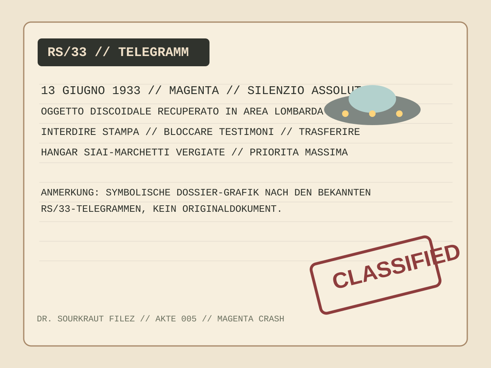
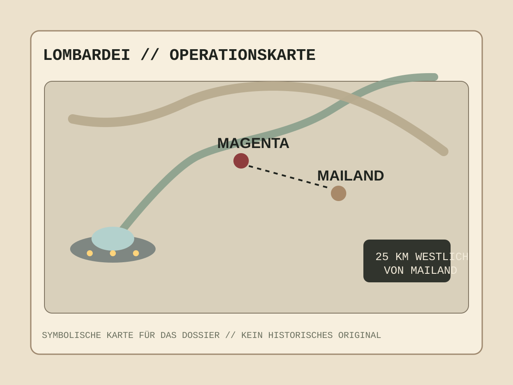

Zusammenfassung
Die Magenta-Akte beginnt mit einer Behauptung, die so groß ist, dass sie entweder historisch oder legendär sein muss: Ein unbekanntes Flugobjekt soll am 13. Juni 1933 nahe Magenta bei Mailand abgestürzt sein. Die Geschichte taucht Jahrzehnte später in Form angeblicher faschistischer Geheimdokumente auf, inklusive Telegrammen über "absolute Stille", einer geheimen Untersuchungsgruppe namens RS/33 und Hinweisen darauf, dass das Objekt in einen Hangar bei Vergiate gebracht wurde.


Warum dieser Fall so groß ist
Der Magenta-Crash wird in Mystery-Kreisen oft als der erste moderne UFO-Absturz bezeichnet. Der entscheidende Punkt: Er soll 14 Jahre vor Roswell 1947 passiert sein. Sollte an den Papieren etwas dran sein, dann hätte nicht die US-Regierung, sondern das faschistische Italien als erstes einen geborgenen Non-Human-Craft untersucht.
- Datum: 13. Juni 1933
- Ort: Magenta, Lombardei, nahe Mailand
- Objekt: scheiben- oder glockenförmiger Crash-Körper
- Staatliche Reaktion: Mussolini soll militärische Bergung angeordnet haben
- Historische Sprengkraft: möglicher erster Crash-Retrieval der Moderne
Mussolinis Geheimakte RS/33
Die Kernstory dreht sich um die ominöse Einheit Gabinetto RS/33, oft als Ricerche Speciali 1933 gelesen. Laut den verbreiteten Unterlagen ließ Mussolini eine abgeschirmte Gruppe aus Wissenschaftlern, Militärs und Nachrichtendienst-Leuten auf den Fall ansetzen. Ziel war nicht Romantik, sondern Kontrolle: War das Ding eine geheime Waffe aus Frankreich, Deutschland oder Großbritannien, oder etwas völlig Fremdes?
In mehreren Darstellungen taucht Guglielmo Marconi, Nobelpreisträger und Funkpionier, als leitende Figur dieser Untersuchung auf. Belegt ist das nicht unabhängig, aber genau dieser Mix aus Diktatur, Militär und Spitzenwissenschaft macht die Akte bis heute so verführerisch.


Die Bergung und der Hangar-Mythos
Mehrere spätere Berichte behaupten, das abgestürzte Objekt sei nach dem Crash in die Nähe von Vergiate gebracht worden, in Anlagen der SIAI-Marchetti-Luftfahrtindustrie. Dort soll es unter höchster Geheimhaltung gelagert worden sein. Manche Versionen sprechen von einer klassischen Scheibe, andere eher von einer glockenartigen Form, aber alle Erzählstränge laufen auf denselben Kern hinaus: etwas Unbekanntes stürzte ab, wurde gesichert und verschwand in staatlicher Obhut.
Der Vatikan-Faden
Richtig düster wird die Akte durch die Vatikan-Verbindung. In mehreren modernen Nacherzählungen wird behauptet, der Vatikan habe über Mittelsmänner Informationen zu dem Fall weitergegeben, teils sogar an westliche Dienste. Auch David Grusch erwähnte 2023 in Interviews, dass die Weitergabe von Informationen über den Vatikan eine Rolle gespielt habe, bevor die USA nach Kriegsende Zugriff auf das Objekt bekommen hätten. Belegt ist das nicht sauber, aber als Verbindungslinie zwischen Rom, Geheimdienstwelt und Nachkriegs-USA ist dieser Punkt pures Mystery-Sprengmaterial.
David Grusch und die Rückkehr der alten Akte
Was Magenta aus dem Nerd-Archiv zurück ins Rampenlicht gezogen hat, war die Erwähnung durch Pentagon-Whistleblower David Grusch. Er bezeichnete den Fall öffentlich als einen frühen Crash-Recovery-Vorfall eines nichtmenschlichen Fahrzeugs und verwies auf Informationen aus klassifizierten Briefings. Seitdem wird Magenta nicht mehr nur als alte italienische UFO-Geschichte gehandelt, sondern als mögliches Vor-Kapitel der modernen UAP-Cover-up-Erzählung.
Was für Authentizität spricht und was dagegen
Believer sehen vor allem die Telegramme, den konsistenten Kern der Überlieferung und die politische Plausibilität einer faschistischen Geheimhaltung. Skeptiker halten dagegen: Die Dokumente tauchten erst sehr spät auf, die Herkunft führt auf anonyme Zusendungen zurück, unabhängige Archivbestätigungen fehlen und manche späteren Details wirken stark ausgeschmückt.
- Pro Mystery: plausible Geheimhaltung im faschistischen Staat, wiederkehrende Telegramm-Details, Bezug zu realen italienischen UFO-Akten
- Contra: späte Dokumentenherkunft, keine allgemein anerkannte unabhängige Verifikation, starke spätere Mythenbildung
- Fazit der Akte: nicht gerichtsfest, aber viel zu hartnäckig, um einfach wegzulachen
Sourkraut-Briefing Fazit
Magenta 1933 ist der Fall, der die ganze Chronologie verschiebt. Vor Roswell. Unter Mussolini. Mit Geheimtelegrammen. Mit angeblicher Bergung. Mit Vatikan-Spur. Und Jahrzehnte später wieder hochgezogen durch David Grusch. Ob hier wirklich der erste geborgene UFO-Crash der Moderne in den Akten schlummert oder ob wir auf eine der zähesten Legenden der Ufologie schauen, ist noch offen. Aber genau das macht Akte 005 so stark: Sie klingt nicht wie ein sauberer Mythos. Sie klingt wie etwas, das zu früh passiert ist und deshalb nie richtig verschwinden konnte.